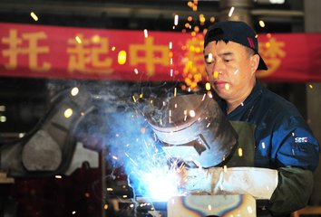
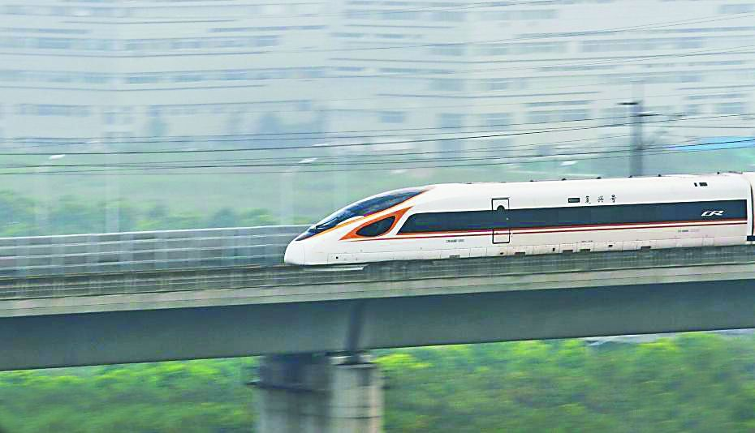
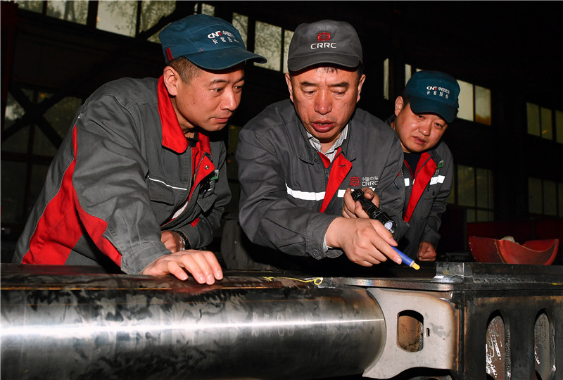

“大国工匠”李万君：为中国梦“加速”
随着时速250公里、350公里动车组的成功运营，中国高铁已经成为一道亮丽的风景。而作为“中国第一代高铁工人”，李万君即是这道风景的描绘者之一。
李万君，中车长春轨道客车股份有限公司高级技师，被誉为“工人院士”“高铁焊接大师”。自1987年进厂工作以来，他坚守岗位、苦练技术、攻克难关，迅速成长为公司焊接领域的专家，是中国高铁动车组焊接领军人物，名副其实的“大国工匠”。他将自己的工作视作艺术而非单纯的技能，精益求精已成为他的工作常态。

勤学苦练 技能卓越
在焊接世界里，这个来自一线的技术工人，在多年工作积累中学会了一项神乎其技的绝活儿，在“君粉”心中如同耀眼巨星：他隔着20米，听到焊接的声音，就能判断出电流电压的大小、焊缝的宽窄、平焊还是立焊、焊接质量如何，毫无差错。“高铁所有焊件必须表里如一、没有瑕疵，否则掉一个焊渣都可能造成重大事故，每一个焊件都得是艺术品。”李万君说。
李万君先后参与了我国几十种城轨车、动车组的首件试制焊接工作，总结并制定了多种焊接规范及操作方法。他总结摸索出和谐号动车组转向架构架环口焊接“七步操作法”，获得法国专家的认可，成为公司的技术标准。他参与世界最高速度等级300km/h动车组转向架横梁管接口及平板对接的焊接工艺评定，制定了可行的焊接规范。2010年，他参与我国首次使用氩弧焊焊接伊朗单层铁路客车转向架横梁环口的工作，并成功总结出一套焊接操作方法，从而弥补了我国没有用氩弧焊焊接铁路客车转向架环口的空白。2011年以来，李万君带头完成国家发明专利21项，革新70多项，重大技术创新10余项，取得五小成果150多项，获奖104项。

精心培育，培训人才添动力
工作中，李万君发挥自己的技术特长，为公司培训了一大批高素质焊接人才。多年来，他带的徒弟都取得了骄人的成绩，有的成长为技师，有的成为高技能人才指导师，有的考取了国际焊接技师资格。 在公司近几年的现场培训工作中，他总结编制了二氧化碳气体保护焊平板对接单面焊双面成形焊接工艺，2008年、2009年，他为公司培训410名新员工，全部考取了国际焊工资质证书，而且全部是一次性通过，要知道，一般一个焊工至少得积累两年实操经验，才有可能考取此证，而且很难一次性通过。在传授技能这件事情上，李万君毫不含糊。他利用业余时间举办高级电焊工培训班，一招一式地传，手把手地教，经常跪在地上指导操作。他还会根据大家的不同特点量身定做训练方案。2013年，长春市焊工比赛的前三名都出自李万君门下。 2010年6月，李万君担任公司焊工首席操作师并成立了焊工工作站，带领车间全体操作师进行技术攻关及创新50多项，解决了生产中的难题。李万君还担任长春市劳模高技能传承活动传承师，先后为10家企业组织传承焊接技能活动6次。

精于工、匠于心、品于行，李万君无愧于“大国工匠”的光荣称号。
精于工、匠于心、品于行，工匠精神的魂在于有一颗精益求精的匠心。高铁焊接师李万君是大国工匠的体现，为“中国制造”由大变强助力，展现了“劳动光荣、技能宝贵、创造伟大”的时代风尚。对职业有敬畏感，对工作有执着心。弘扬“工匠精神”，就从坚守本分做起。